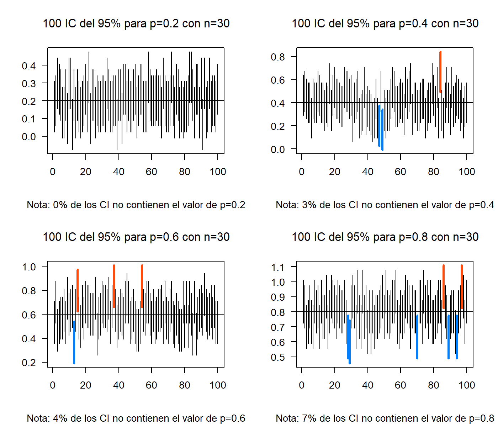
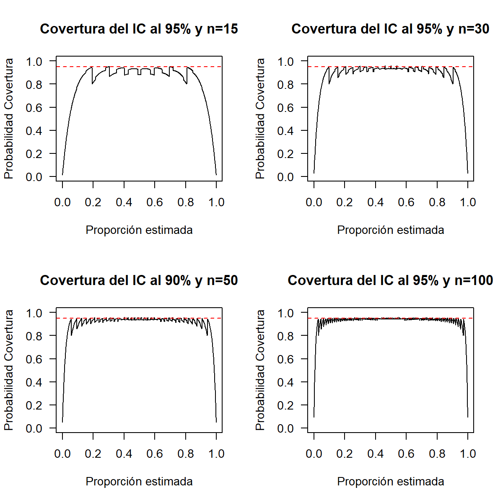
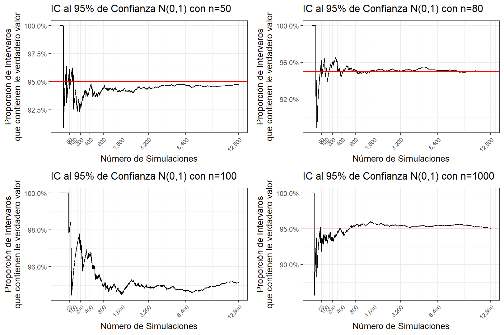
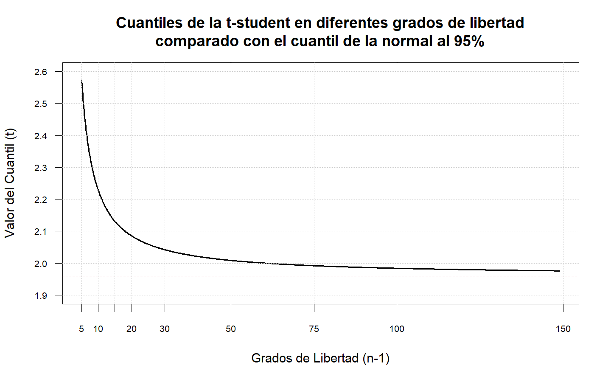
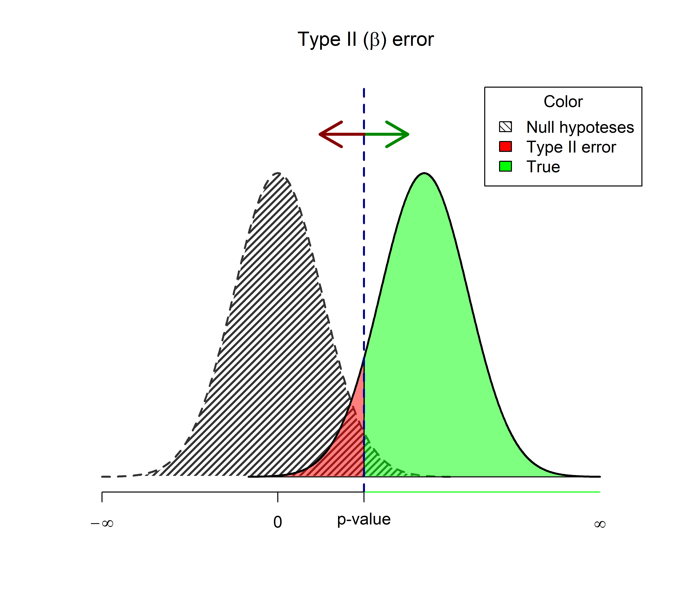
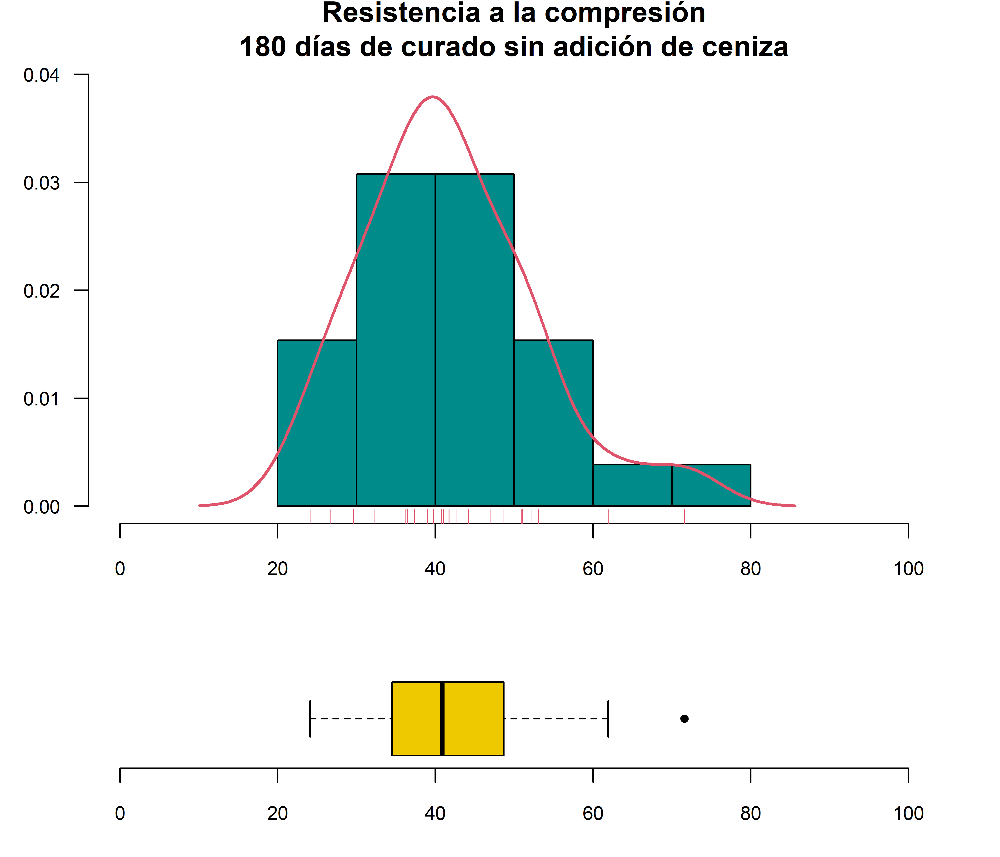

Inferencia Estadística
Muestras Aleatorias
En el proceso de identificar y explicar las características esenciales que permiten describir el comportamiento de un fenómeno, nuestro objetivo es el de establecer de manera aproximada dicho comportamiento usando parte de toda la información relevante acerca del fenómeno.
Cuando se desea estimar un parámetro poblacional se puede presentar cualquiera de los próximos 3 casos:
- Estimar una proporción
- Estimar un promedio
- Estimar una varianza
Estas características son únicas en cada caso. La idea es estimar o aproximar estos parámetros usando la información recolectada a partir de una muestra. Cada objeto o individuo seleccionado aporta información acerca de la característica que se quiere medir, la cual varía de individuo a individuo. Así, una muestra no es más que una colección de variables aleatorias. Si además, las mediciones son independientes, las variables involucradas también lo serán.
Una muestra aleatoria (m.a) de tamaño \(n\), es un conjunto de \(n\) variables aleatorias independientes e idénticamente distribuidas. Si \(X_1,\dots,X_n\) es una m.a, entonces
\[f(X_1,\dots,X_n)=\prod_i^n f_{X_i} (x_i)\] \[f_{X_i}(x_i)=f(x_i)\quad \forall_i=1,\dots,n\]
Un estadístico es entonces una función de una m.a. No todos los estadísticos que se definen a partir de una m.a. son de interés. La idea está en encontrar aquellos que permiten obtener mejores aproximaciones a los parámetros de interés. (Por ejemplo la media \(\mu\), la varianza \(\sigma^2\) o una proporción \(p\)).
- Una aproximación para \(\mu\) es: \(\bar{X}=\sum_1^n \frac{X_i}{n}\)
- Una aproximación para \(\sigma^2\) es: \(S^2=\sum_1^n \frac{(X_i-\bar{X})^2}{n-1}\)
- Una aproximación para \(p\) es: \(\frac{X}{n}\), donde \(X\sim bin(n,p)\)
Entonces se plantean las siguientes preguntas.
- ¿Cuál es la distribución de \(\bar{X}\)?
- ¿Cuál es la distribución de \(S^2\)?
- ¿Cuál es la distribución de \(\frac{X}{n}\)?
Sea \(X_1,\dots,X_n\) una muestra aleatoria de una distribución con media \(\mu\) y varianza \(\sigma^2\)
Sea \(\bar{X}=\sum_1^n \frac{X_i}{n}\), entonces \[\begin{align*} E[\bar{X}]&=E\left[\sum_1^n \frac{X_i}{n}\right]=\frac{1}{n}\sum_1^n E[X_i]=\frac{1}{n}\sum_1^n \mu=\frac{n\mu}{n}=\mu\\ Var[\bar{X}]&=Var\left[\sum_1^n \frac{X_i}{n}\right]=\frac{1}{n^2}\sum_1^n Var[X_i]=\frac{1}{n^2}\sum_1^n \sigma^2=\frac{n\sigma^2}{n^2}=\frac{\sigma^2}{n} \end{align*}\] Así, la distribución muestral de \(\bar{X}\) tiene media \(\mu\) y varianza \(\sigma^2/n\)
Teorema central del límite
Suponga que \(X_1,\dots,X_n\) es una muestra aleatoria de una población con media \(\mu\) y varianza \(\sigma^2\). Sea \(\bar{X}\) la media muestral que depende de \(n\) entonces cuando \(n \rightarrow \infty\) se cumple que:
\[\Large \cfrac{\bar{X}-\mu}{\frac{\sigma}{\sqrt{n}}} \stackrel{aprox}{\underset{n \rightarrow \infty}{\widetilde{\quad\quad}}} N(0,1)\]
Entre mayor sea \(n\) mejor es la aproximación. Si la distribución de la muestra es simétrica y continua, los tamaños muestrales relativamente pequeños, permiten obtener buenas aproximaciones. Si la distribución es discreta, se requiere de tamaños muestrales grandes.
\[P(\bar{X}<a)=P\left(\frac{\bar{X}-\mu}{\sigma/\sqrt{n}}<\frac{\bar{X}-a}{\sigma/\sqrt{n}}\right) \approx P\left(Z<\frac{\bar{X}-a}{\sigma/\sqrt{n}}\right)\]
Si se desconoce el valor de \(\sigma^2\) y \(n\) es grande, se puede reemplazar \(\sigma^2\) por \(S^2\).
\[\Large \cfrac{\bar{X}-\mu}{\frac{S}{\sqrt{n}}} \stackrel{aprox}{\underset{n \rightarrow \infty}{\widetilde{\quad\quad}}} N(0,1)\]
La resistencia a la compresión del concreto es una v.a con una resistencia media de 2500 psi y una desviación estándar de 50 psi. Si se examinan 36 especímenes de concreto, ¿Cuál es la probabilidad de que la resistencia promedio en esta muestra esté entre 2497 y 2505?
\[E[X_i]=2500 \quad \text{y} \quad Var[X_i]=2500\] Ahora, \[\begin{align*} P(2497<\bar{X}<2505)&=P\left(\frac{2497-2500}{50/\sqrt{36}}<\frac{\bar{X}-\mu}{\sigma/\sqrt{n}}<\frac{2505-2500}{50/\sqrt{36}}\right)\\\\ &\approx P(-0.36<Z<0.6)\\ &=\Phi(0.6)-\Phi(-0.36)\\ &=0.7257469 - 0.3594236\\ &=0.3663233 \end{align*}\]
Inferencia sobre un parámetro
Hasta ahora los estimadores estudiados son puntuales, es decir, exhiben un solo valor como estimación del parámetro de interés. Pero en muchos casos esto no es suficiente. A veces se requiere de un rango de posibles valores para el parámetro de interés, es decir, un intervalo real donde se cree estará el valor del parámetro con una alta confianza.
Sea \(\theta\) un parámetro de interés y \(\hat{\theta}\) un estimador puntual de \(\theta\) en un intervalo real de la forma \((L_\hat\theta , U_\hat\theta)\) talque \((L_\hat\theta < \theta < U_\hat\theta)\), donde \(L\) y \(U\) dependen de y de la distribución de \(\hat\theta\).
Cada muestra aleatoria proporcionará un valor diferente para \(\hat\theta\) y por lo tanto valores diferentes para \(L\) y \(U\). Así, los extremos del intervalo en cuestión se convierten en variables aleatorias. El intervalo \((L , U)\) es llamado Intervalo Aleatorio. Usando \(\hat\theta\) y su distribución es posible determinar \(L\) y \(U\) tales que:
\[P(L_\hat\theta < θ < U_\hat\theta) = 1 − \alpha,\quad \alpha \in (0,1)\]
Para una muestra particular se obtiene el intervalo \((l , u)\) donde se espera esté el verdadero valor de \(\theta\), Este intervalo será llamado un Intervalo de Confianza al \(100(1 − \alpha)\%\) para \(\alpha\), además \(l\) y \(u\) son llamados Límites de Confianza.
Intervalos de confianza para la proporción
Sea \(X\) una variable aleatoria tal que \(X\sim bin(n,p)\). El Teorema Central del Límite garantiza que:
\[\cfrac{X-np}{\sqrt{np(1-p)}} \stackrel{aprox}{\underset{n \rightarrow \infty}{\widetilde{\quad\quad}}} N(0,1)\]
Un estimador insesgado para \(p\) es \(\bar{p}=X/n\), entonces:
\[\frac{X-np}{\sqrt{np(1-p)}}=\frac{n[X/n-p]}{\sqrt{np(1-p)}}=\frac{X/n-p}{\sqrt{p(1-p)/n}}\stackrel{aprox}{\underset{n \rightarrow \infty}{\widetilde{\quad\quad}}} N(0,1)\]
Entonces un intervalo de confianza para \(\hat{p}\) es de la forma:
\[\hat{p}\, \pm\, Z_{\alpha/2}\sqrt{\frac{\hat{p}(1-\hat{p})}{n}}\]
En una muestra de 85 juntas de dilatación de losas, 10 presentan fisuras perpendiculares. ¿Cuál es la proporción real de fisuras en las juntas de dilatación con una confianza del 95%?
Sea \(X\) el número de fisuras en las juntas de dilatación de las losas, entonces \(X\sim bin(85,p)\). Del enunciado se tiene que: \(\hat{p}=x/85=10/85=0.1176471\)
Un Intervalo de Confianza (IC) aproximado al 95% para \(p\) es de la forma: \[\frac{10}{85}\,\pm\,1.96\sqrt{\frac{(10/85)(75/85)}{85}}\,\Rightarrow\,0.1176\,\pm\,0.0685\,\Rightarrow(0.0492;0.1861)\] En conclusión, con una confianza deñ 95% la proporción de fisuras perpendiculares en las juntas de dilatación de las losas se estiman entre (0.0492;0.1861)
El siguiente ejercicio de simulación muestra el concepto de la probabilidad de los intervalos de confianza y la influencia de los tamaños de muestra

Cuando aumenta el tamaño de muestra los intervalos tienen menor amplitud, lo cual es lo deseado, ya que la amplitud es una medida de precisión.

En términos de la cobertura del intervalo, se espera que para cualquier valor estimado de \(p\) la probabilidad de cobertura sea cercana al nivel de confianza \(100(1-\alpha)\%\).

Este es el inconveniente que presenta esta propuesta de intervalo para la proporción llamada método Wald. En la literatura existe muchas propuestas para intervalos de confianza para la proporción, de hecho, sigue siendo un caso de estudio por varios estadísticos.
En 1934 Clopper y Pearson presentaron una propuesta para los intervalos de confianza basados en la Distribución Beta que, a su vez, está relacionada con la Distribución F, sin embargo, lo complejo de sus cálculos no le dio el protagonismo para la época. Ahora este intervalo se ha puesto a prueba gracias a los avances computacionales haciendo fácil el cálculo y entregando mejores resultados en términos de probabilidad de cobertura.
\[B(\alpha/2;\,x,\,n-x+1)<\hat{p}<B(1-\alpha/2;\,x+1,\,n-x)\]
O parametrizada con la Distribución F
\[{\displaystyle \left(1+{\frac {n-x+1}{x\,F\!\left[{\frac {\alpha }{2}};2x,2(n-x+1)\right]}}\right)^{-1}<\hat{p} <\left(1+{\frac {n-x}{(x+1)\,\,F\!\left[1-{\frac {\alpha }{2}};2(x+1),2(n-x)\right]}}\right)^{-1}}\]
En R es fácil hacer este cálculo, el primer método es hacer la fórmula con qbeta y otra forma es con el paquete PropCIs
## [1] 0.05788185## [1] 0.2057331## [1] 0.05788185 0.20573312
## attr(,"conf.level")
## [1] 0.95Intervalos de confianza para la media
Sea \(X_1,\dots,X_n\) una muestra aleatoria de una población normal \(N(\mu,\sigma^2)\) con media desconocida y varianza conocida. Un intervalo de confianza para \(\mu\) al \(100(1-\alpha)\%\) está dado por:
\[\bar{X}\,\pm\,Z_{\alpha/2}\frac{\sigma}{\sqrt{n}}\]
Un fabricante produce anillos para los pistones de un motor de automóvil. Se sabe que el diámetro del anillo tiene una distribución aproximadamente normal. De la experiencia se ha encontrado que la dispersión en los diámetros es aproximadamente de 0.05 mm. Se escogen al azar 15 anillos y se miden sus diámetros. El diámetro promedio resultó en 74.04 mm.
- Calcule el I.C. al 95% para el diámetro medio real de estos anillos.
- Si se desea que la precisión del intervalo sea inferior a 0.01, con una confianza del 95%. ¿Cuál debe ser el mínimo tamaño de muestra para cumplir éste objetivo?
Para la primera parte se tiene que \(X_1,\dots,X_{15}\) es una muestra aleatoria que representa los diámetros de 15 anillos, cada \(X_i\sim N(\mu,0.05^2)\), además de la muestra se obtiene que \(\bar{X}=74.04\,\text{mm}\)
Un IC al 95% para \(\mu\) está dado por: \[74.04\,\pm\,Z_{0.025}\frac{0.05}{\sqrt{15}} \,\Rightarrow\, (74.0147;\,74.0653) \] La precisión de un intervalo está dado por \(max\{\theta-L,U-\theta\}\), en este caso tenemos un intervalo simétrico entonces la magnitud está dada por el término del error \(Z_{0.025}(0.05/\sqrt{n})\)$, entonces: \[\begin{align*} \frac{1.96\times 0.05}{\sqrt{n}}&<0.01\\\\ \frac{1.96\times0.05}{0.01}&<\sqrt{n}\\\\ n&>96.03647 \approx 97 \end{align*}\]
El siguiente ejercicio de simulación muestra el concepto de la probabilidad de los intervalos de confianza y la influencia de los tamaños de muestra

En términos de la cobertura del intervalo, se espera que para cualquier valor estimado de \(p\) la probabilidad de cobertura sea cercana al nivel de confianza \(100(1-\alpha)\%\).

En el caso de que las muestra aleatoria que proviene de una distribución normal \(N(\mu,\sigma^2)\) no se tenga información de \(\sigma\), es decir, que tiene varianza desconocida entonces se puede reemplazar \(\sigma^2\) por \(S^2\) siempre y cuando se tenga tamaños de muestra grandes tal que:
\[\bar{X}\,\pm\,Z_{\alpha/2}\frac{S}{\sqrt{n}}\]
En R no existe una función como tal para calcular intervalos de confianza para la distribución normal, sin embargo, no es difícil realizar su programación
ICNorm <- function(Xbar,sigma,n,alpha=0.05){
ic <- Xbar+c(-1,1)*qnorm(1-alpha/2)*sigma/sqrt(n)
return(ic)
}
# Para el ejemplo del diámetro de los anillos
ICNorm(Xbar = 74.04,sigma = 0.05,n = 15,alpha=0.05)## [1] 74.0147 74.0653## [1] 74.03005 74.04995## [1] 0.00995021Suponga que \(X_1,\dots,X_n\) es una muestra aleatoria de una \(N(\mu,\sigma^2)\), si la varianza es desconocida la distribución de \(\bar{X}\) estandarizada NO es normal. Si reemplazamos \(\sigma\) por \(S\), el estadístico resultante es:
\[T=\cfrac{\bar{X}-\mu}{\frac{S}{\sqrt{n}}} \sim t_{(n-1)}\]
Realizando un proceso similar al caso de muestras aleatorias con media desconocida, se puede encontrar que un IC al \(100(1 − \alpha)\%\) para \(\mu\) es de la forma:
\[\bar{X} \pm t_{(\alpha/2,\,n-1)}\frac{S}{\sqrt{n}}\]

De acuerdo a estudios sobre el concreto se encontró que el porcentaje de resistencia a los 28 días de curado se distribuye normalmente. Se toma una muestra aleatoria de 15 cilindros de concreto con 28 días de curado y se obtiene un porcentaje promedio de resistencia de 83.5% con una desviación estándar de 2.8%. Estime el porcentaje promedio de resistencia real del concreto usando un IC al 97%.
Sea \(X_1,\dots,X_n\) una muestra aleatoria que representa el porcentaje de resistencia del concreto. Suponga que \(E[X_i]=\mu\) y \(Var[X_i]=\sigma^2\) ambas desconocidas, además del enunciado se tiene que \(\bar{x}=83.5\), \(S=2.8\) y \(n=15\) entonces un IC al 97% para \(\mu\) está dado por: \[\begin{align*} \bar{X}\,&\pm\,t_{0.015,n-1}\frac{S}{\sqrt{n}}\\\\ 83.5\,&\pm\,t_{0.015,14}\frac{2.8}{\sqrt{15}}\\\\ 83.5\,&\pm\,2.4149\frac{2.8}{\sqrt{15}}\\ 83.5\,&\pm\,1.7459 \end{align*}\] Se espera que el porcentaje de resistencia media real del concreto a los 28 días de curado esté entre 81.75% y 85.25% con una confianza del 97%.
En R no hay forma de hacer estimaciones de por intervalo con estadísticos calculados, la única forma es con un vector de datos o una base de datos. No obstante, no es difícil programar una función para calcular intervalos de confianza para la t-student cuando se tienen los estadísticos calculados.
ICt <- function(Xbar,sigma,n,alpha=0.05){
ic <- Xbar+c(-1,1)*qt(p = 1-alpha/2,df = n-1)*sigma/sqrt(n)
return(ic)
}
# Para el ejemplo de la resistencia
ICt(Xbar = 83.5,sigma = 2.8,n = 15,alpha = 0.03)## [1] 81.75413 85.24587Pruebas de hipótesis para la proporción
Una hipótesis Estadística es una afirmación que se hace con respecto a una o algunas características desconocidas de una población de interés o acerca de la misma población.
Una afirmación hecha acerca de una población o de una de sus características de interés, tiene sentido solo si es evaluada con base en la información obtenida a partir de una muestra aleatoria de dicha población.
Como dicha afirmación puede ser o no cierta, dos hipótesis (antagónicas) pueden ser planteadas:
\[H_0:\text{La hipótesis es cierta vs}\quad H_a:\text{La hipótesis es falsa}\] \(H_0\) y \(H_a\) se conocen como hipótesis nula y alternativa respectivamente. \(H_0\) se rechaza, solo si la evidencia muestral apoya fuertemente esa decisión. En otro caso diremos que la evidencia muestral no es suficiente para rechazar \(H_0\) y se asume \(H_a\) como cierta. El proceso por medio del cual escogemos una de las dos hipótesis es llamado Prueba de Hipótesis.
Para rechazar o aceptar una hipótesis necesitamos a parir de la muestra aleatoria construir un estadístico de prueba tal que, comparado con valor crítico calcula con un nivel de significancia, otorgue la suficiente evidencia para sacar una conclusión. El contraste de la hipótesis nula determina las posibles regiones de rechazo donde será comparado el estadístico de prueba.
\[1:\,\{x\,|\,x > |k|\}\\2:\,\{x\,|\,x < -k\}\\3:\,\{x\,|\,x > k\}\]
Así toda prueba de hipótesis consta de:
- Hipótesis nula \(H_0\).
- Hipótesis alternativa \(H_a\).
- Estadístico de prueba.
- Región de rechazo.
En general, sea un parámetro de interés desconocido \(\theta\) y un valor particular \(\theta_0\). Es posible plantear una de tres hipótesis alternativas:
\[\begin{align*} H_0: \theta=\theta_0 \quad \text{vs} \quad H_a: \begin{cases} \theta &<\theta_0 \\ \theta &> \theta_0 \\ \theta &\neq \theta_0 \\ \end{cases} \end{align*}\]
Existe un estadístico \(\hat\theta\) estimado a partir de la muestra aleatoria, el cual sirve para contrastar la hipótesis construyendo las posibles regiones de rechazo (de acuerdo a \(H_a\)) con un nivel de significancia \(\alpha\) dado.
\[\{\hat\theta\,|\,\hat\theta > |k|\}\quad \{\hat\theta\,|\,\hat\theta < k\}\quad \{\hat\theta\,|\,\hat\theta > k\}\]
Otra forma de contrastar la hipótesis es calcular el valor mínimo de \(\alpha\), es decir la probabilidad de rechazar la hipótesis nula. A este cálculo se le conoce como el valor-p de la prueba:
\[P(|\hat\theta| > |k|)\quad P(\hat\theta < k)\quad P(\hat\theta > k)\]
La decisión de aceptar o rechazar una hipótesis se basa en una muestra aleatoria \(X_1,X_2,...,X_n\) de la distribución de \(X\), por tanto la decisión podría ser equivocada. Los errores que se pueden cometer son:
Aceptar \(H_0\) siendo falsa.
Rechazar \(H_0\) siendo verdadera.
| Decisión | \(H_0\) es Verdadera | \(H_0\) es Falsa |
|---|---|---|
| Rechazar \(H_0\) | Error Tipo I | Decisión Correcta |
| Aceptar \(H_0\) | Decisión Correcta | Error Tipo II |
Es lógico que se desea minimizar las probabilidades de cometer los errores en la decisión (tipo 1 ó 2), pero esto depende de la m.a \(X_1,X_2,...,X_n\). Sin embargo, si P(cometer error tipo 1)=0, entonces P(cometer error tipo 2)=1.
\[\alpha = P(\text{Error Tipo I})\] \[\beta = P(\text{Error Tipo II})\] \(\alpha\) es llamado nivel de significancia de la prueba o tamaño de la región crítica y \(1-\beta\) es la potencia de la prueba.

Suponga que \(X\) es una v.a tal que \(X \sim bin(n , p)\), con \(p\) desconocida. Sea \(p_0\) un valor de interés para \(p\). Tres hipótesis pueden ser planteadas acerca de \(p\).
\[\begin{align*} H_0: p=p_0 \quad \text{vs} \quad H_a: \begin{cases} p &<p_0 \\ p &> p_0 \\ p &\neq p_0 \\ \end{cases} \end{align*}\]
Por el TCL sabemos que si \(n\) es grande entonces:
\[\cfrac{\hat{p}-p_0}{\sqrt{\frac{p_0(1-p_0)}{n}}} \stackrel{aprox}{\underset{n \rightarrow \infty}{\widetilde{\quad\quad}}} N(0,1)\]
Entonces el estadístico de prueba a ser usado es:
\[Z_c=\cfrac{\hat{p}-p_0}{\sqrt{\frac{p_0(1-p_0)}{n}}}\]
Para un \(\alpha\) dado, la Región Crítica es de la forma:
\[\begin{align*} R.C: \begin{cases} Z_c &\rightarrow\, Z_c <z_\alpha \\ Z_c &\rightarrow\, Z_c >z_{1-\alpha} \\ Z_c &\rightarrow\, |Z_c| >z_{1-\alpha/2} \\ \end{cases} \qquad V_p: \begin{cases} P(Z < Z_c) \\ P(Z > Z_c) \\ P(|Z| > |Z_c|) \\ \end{cases} \end{align*}\]
En una muestra de 85 juntas de dilatación de losas, 10 presentan fisuras perpendiculares. La constructora sabe que si el porcentaje de fisuras supera el 10% deberá detener la obra para realizar los refuerzos necesarios. Con un nivel de significancia del 5% ¿es necesario suspender las obras?
Tenemos las siguientes hipótesis \[H_0: p=0.1 \quad\text{vs}\quad H_a: p>0.1\] Entonces con el estadístico de prueba se puede estimar la región crítica: \[Z_c=\frac{10/85-0.1}{\sqrt{\frac{0.1 \times 0.9}{85}}}=0.542326\] Si \(\alpha =0.05\) entonces se tiene que \(Z_{0.95}=1.645\) y así la región de rechazo es de la forma: \[RC=\{Z_c\,|\,Z_c>Z_{0.95}\}=\{Z_c\,|\,0.542326>1.645\}\] Y en términos del valor-p se calcula: \[P(Z>Z_c)=P(Z>0.542326)=1-P(Z<0.542326)=0.2938\] Como \(ZC\ngtr 1.645\) o \(0.2938 > 0.05\), entonces no existe suficiente evidencia muestral que soporte la suspensión de las obras, por lo tanto no se rechaza \(H_0\).
En R se puede hacer fácilmente las pruebas de hipótesis para la proporción, ya sea a partir de un conjunto de datos, una tabla/matriz o con la proporción directa. La función prop.test hace los cálculos necesarios para las pruebas de hipótesis incluyendo el intervalo de confianza, no obstante, el estadístico de prueba que utiliza está basado en la distribución \(\chi^2\) y los intervalos de confianza son estimados a través del método Wilson, adicionalmente tiene la opción de hacer el cálculo a partir de la corrección de Yates para tamaños de muestra pequeños.
##
## 1-sample proportions test without continuity correction
##
## data: 10 out of 85, null probability 0.1
## X-squared = 0.29412, df = 1, p-value = 0.2938
## alternative hypothesis: true p is greater than 0.1
## 95 percent confidence interval:
## 0.0716376 1.0000000
## sample estimates:
## p
## 0.1176471##
## 1-sample proportions test with continuity correction
##
## data: 10 out of 85, null probability 0.1
## X-squared = 0.13072, df = 1, p-value = 0.3588
## alternative hypothesis: true p is greater than 0.1
## 95 percent confidence interval:
## 0.06712105 1.00000000
## sample estimates:
## p
## 0.1176471Pruebas de hipótesis para la media
Sea \(X_1,\dots,X_n\) una muestra aleatoria de una población con media \(\mu\) y varianza \(\sigma^2\) si se tienen una muestra grande, entonces para un valor \(\mu_0\) de interés para \(\mu\) se pueden plantear uno de los siguientes contrastes de hipótesis.
\[\begin{align*} H_0: \mu=\mu_0 \quad \text{vs} \quad H_a: \begin{cases} \mu &<\mu_0 \\ \mu &> \mu \\ \mu &\neq \mu_0 \\ \end{cases} \end{align*}\]
El Estadístico de Prueba está dado por:
\[Zc=\cfrac{\bar{X}-\mu_0}{\frac{\sigma}{\sqrt{n}}}\]
Si \(\sigma^2\) es desconocida se puede reemplazar por \(S^2\). Para un \(\alpha\) dado, la Región Crítica es de la forma:
\[\begin{align*} R.C: \begin{cases} Z_c &\rightarrow\, Z_c <z_\alpha \\ Z_c &\rightarrow\, Z_c >z_{1-\alpha} \\ Z_c &\rightarrow\, |Z_c| >z_{1-\alpha/2} \\ \end{cases} \qquad V_p: \begin{cases} P(Z < Z_c) \\ P(Z > Z_c) \\ P(|Z| > |Z_c|) \\ \end{cases} \end{align*}\]
Se estudia el rendimiento de un proceso químico. Con base en la observación de 50 días. Se obtuvo un rendimiento promedio del 90.48% con una desviación estándar de 1.1514 %. ¿Se puede afirmar que el rendimiento real del proceso es superior al 90%, con un nivel de significancia del 1%?. Las pruebas de hipótesis son: \[H_0: \mu=90 \quad\text{vs}\quad H_a: \mu>90\] Del enunciado tenemos que \(E[X_i]=90.48\) y como \(\sigma^2\) es desconocido, entonces se usa \(S^2=1.1514\), así el estadístico de prueba está dado por: \[Z_c=\cfrac{\bar{X}-90}{\frac{1.1514}{\sqrt{50}}}=\cfrac{90.48-90}{\frac{1.1514}{\sqrt{50}}}=2.947814\] Como \(\alpha=001\) se tiene que \(Z_{0.99}=2.3264\), entonces la región de rechazo es de la forma: \[RC=\{Z_c\,|\,Z_c>Z_{0.01}\}=\{Z_c\,|\,2.947814>2.3264\}\] Y en términos del valor-p se calcula: \[P(Z>Z_c)=P(Z>2.947814)=1-P(Z<2.947814)=0.0016\] Como \(Z_c>2.33\) o \(0.0016<0.01\) entonces se rechaza \(H_0\), por lo tanto existe evidencia muestral suficiente que el rendimiento del proceso químico es mayor del 90% con un nivel de significancia del 1%.
En procesos de investigación no es común hacer procesos de muestreo o experimentación, que involucren una gran cantidad de datos, y para realizar pruebas de hipótesis en estas circunstancias es necesario comprobar si los datos provienen de una distribución normal o no.
Las pruebas de hipótesis para la media basadas en poblaciones normales asume que la muestra aleatoria \(X_1,\dots,X_n\) proviene de una \(N(\mu,\sigma^2)\) con ambos parámetros desconocidos, sabemos por el teorema central del límite que:
\[\cfrac{\bar{X}-\mu}{\frac{S}{\sqrt{n}}} \sim t_{n-1}\]
Así, si \(\mu_0\) es un valor particular de \(\mu\), se pueden plantear una de las siguientes tres hipótesis:
\[\begin{align*} H_0: \mu=\mu_0 \quad \text{vs} \quad H_a: \begin{cases} \mu &<\mu_0 \\ \mu &> \mu \\ \mu &\neq \mu_0 \\ \end{cases} \end{align*}\]
El Estadístico de Prueba está dado por:
\[Tc=\cfrac{\bar{X}-\mu_0}{\frac{S}{\sqrt{n}}}\]
Para un \(\alpha\) dado, la Región Crítica es de la forma:
\[\begin{align*} R.C: \begin{cases} T_c &\rightarrow\, T_c <t_{(\alpha,\,n-1)} \\ T_c &\rightarrow\, T_c >t_{(1-\alpha,\,n-1)} \\ T_c &\rightarrow\, |T_c| >t_{(1-\alpha/2,\,n-1)} \\ \end{cases} \qquad V_p: \begin{cases} P(t_{n-1} < T_c) \\ P(t_{n-1} > T_c) \\ P(|t_{n-1}| > |T_c|) \\ \end{cases} \end{align*}\]
El tiempo de secado de un cierto tipo de pintura es una variable aleatoria aproximadamente Normal con media \(\mu=75\). Un grupo de investigadores proponen incorporar un aditivo a la pintura que permitirá reducir el tiempo de secado al que actualmente se tiene. Se cree que los tiempos de secado para esta pintura con el aditivo se seguirán comportando de manera normal, se consideran 25 pruebas donde se aplica la pintura con el aditivo y se registran los tiempos de secado. Del experimento se estimó que el tiempo medio de secado es de 71.8 min con una desviación estándar de 8.7 min. Con un nivel de confianza del 95% ¿se optimiza el tiempo de sacado con el aditivo experimental? Las pruebas de hipótesis son: \[H_0: \mu=75 \quad\text{vs}\quad H_a: \mu<75\] Del enunciado tenemos que \(E[X_i]=71.8\) y \(S^2=8.7\), así el estadístico de prueba está dado por: \[T_c=\cfrac{\bar{X}-75}{\frac{8.7}{\sqrt{25}}}=\cfrac{71.8-75}{\frac{8.7}{\sqrt{25}}}=-1.83908\] Como \(\alpha=001\) se tiene que \(t_{(0.05,24)}=-1.710882\), entonces la región de rechazo es de la forma: \[RC=\{T_c\,|\,T_c<t_{(0.05,24)}\}=\{T_c\,|\,-1.83908<-1.710882\}\] Y en términos del valor-p se calcula: \[P(T>T_c)=P(T<-1.83908)=1-P(T<1.83908)=0.0391\] Como \(T_c<-1.711\) o \(0.0391<0.05\) entonces se rechaza \(H_0\), por lo tanto existe evidencia muestral suficiente que agregar el aditivo experimental a la pintura optimiza el tiempo de secado con un nivel de significancia del 5%.
En R los análisis se realizan directamente a las muestras, entonces no es posible replicar el ejmplo anterior con la información suministrada a no ser que se programe la función ingresando los estadísticos. La función t.test realizar la prueba de hipótesis basado en poblaciones normales, puede emplearse para comparar grupos o para contrastar una muestra aleatoria contra un valor teórico de \(\mu\).
En el siguiente ejemplo retomaremos la base de datos Concrete del paquete MAVE.
Nos interesa conocer el comportamiento de la resistencia a la compresión del concreto a los 180 días de curado sin adiciones de ceniza, los requisitos del diseñador estructural exigen que la resistencia a la compresión en estas condiciones debe superar los 40 MPa, ¿con un nivel de significancia del 5% esta información cumple con la norma?
Para resolver esta inquietud primero debemos preparar los datos, es necesario filtrar la base de datos con las variables de edad a 180 días y ceniza si tiene o no, esto lo podemos hacer fácilmente con el paquete dplyr.
require(dplyr)
# Llamaremos a la nueva base de datos FiltConc
FiltConc <- Concrete %>% filter(fly_ash==0,age==180)
# Resumen estadístico de la resistencia
FiltConc %>% summarise(n=length(concrete_compressive_strength),
media=mean(concrete_compressive_strength),
desv=sd(concrete_compressive_strength))## n media desv
## 1 26 41.73038 10.9291
Si asumimos que el comportamiento de la resistencia a la compresión proviene de una distribución \(N(\mu,\sigma^2)\) entonces la hipótesis a probar es:
\[H_0: \mu=40 \quad\text{vs}\quad H_a: \mu>40\]
##
## One Sample t-test
##
## data: FiltConc$concrete_compressive_strength
## t = 0.80732, df = 25, p-value = 0.2135
## alternative hypothesis: true mean is greater than 40
## 5 percent confidence interval:
## 45.39157 Inf
## sample estimates:
## mean of x
## 41.73038Los resultados nos muestran el valor del estadístico de prueba, los grados de libertad de la distribución t-student y el valor-p de la prueba. Adicionalmente, presenta el intervalo de confianza unilateral al 95% de confianza y el valor estimado de la media.
Como el \(valor-p > \alpha\) entonces no se puede rechazar \(H_0\), por lo tanto no hay evidencia muestral suficiente para concluir que los requisitos del diseñador estructural para la resistencia a la compresión del concreto se cumplan, con un nivel de significancia del 5%.